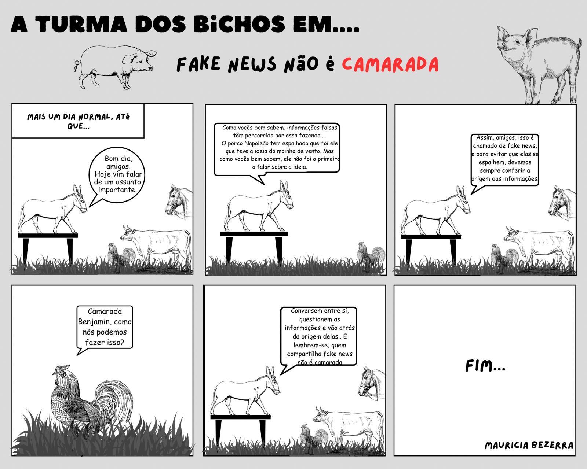

FAKE NEWS NÃO É CAMARADA!
Fake News não é camarada!
COMO SE PROTEGER DAS FAKE NEWS
Antes de compartilhar algo, preste atenção:
Observe se ele possui palavras em letras maiúsculas, exclamações, abreviações, erros de ortografia e excesso de adjetivos
Desconfie se houver dados sem indicar a fonte. Pesquise se a informação vem de um link ou portal conhecido
Para pesquisar as fontes, basta digitar a noticia abaixo, o link gerado procurará a noticia para que você fique protegido das fake news
PESQUISAR
CONFIRA OUTROS TRABALHOS NOSSOS:
